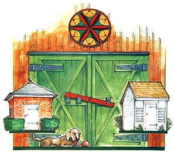
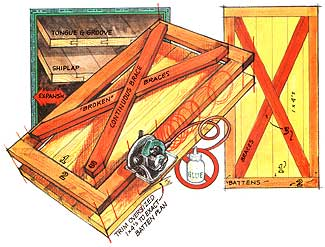
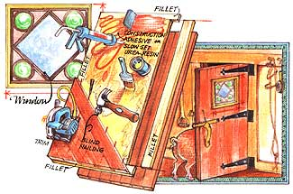
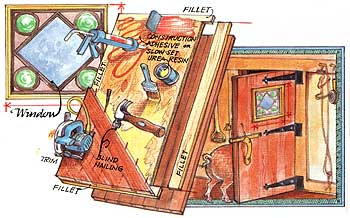

Three ways to build one
Of all the exquisite moments that pass unnoticed in daily life, coming home to your own front door is the second best. Behind you, a day's work and hard knocks in the smelly, stony world; ahead, a portal leading to warmth, soft sounds, familiar smells, slippers and a gathering of spouse, children and/or pets into your arms.
The very best moment? Closing that door behind you, hearing the blessed latch bolt slide along the striker plate and click into its mortise. Psychologically, you're home at last only when you have a solid door between you and the outside world.
If you've never built a door before, perhaps you've been intimidated by one word: rustic. Contaminated by the science of real estate, its close synonyms are shoddy and ugly, which is regrettable, because a useful handmade door can be owner-built strong and sturdy, using one of three classic patterns: batten, layered or joined. All are well within the range of average skills and abilities, and can be as beautiful as any panel door without being as difficult to make. If you have an odd-sized opening, you can make a custom-fit door for less money than a mill charges. You'll need only a flat, wide workbench and fairly unremarkable tools.
Another nice feature of handmade doors is that you can build them slightly larger than their intended openings, and plane them to a perfect fit. In fact, you should. And after they're mounted in place, you can easily take them off the hinges to slather every square inch-top, bottom and sides-with paint or spar varnish. In fact, you must. Water intrusion is the number one killer of doors; don't let it murder yours.
Another caveat: Acquire the intended lockset before you build any handmade door. Some of these doors are thicker than the standard width of just under 2", and may need special hardware or modifications to the latch-bolt area. For a barn or outbuilding that doesn't need to be burglarproof, you can invent a latch of your own design; but a house or garage door should have key locks. When you're ready to install the lockset, use a holesaw to cut the lock hole, a drill to make the latch-bolt hole, and a sharp chisel to flush-mortise the latch bolt.
Installation of any door goes a lot easier if you mount the hinges on the door first, rather than on the jamb. Hinges usually go 8" from the door's top, 9" from the bottom, and at the exact midpoint. Set the door in place with blocks underneath, to raise it to a proper top reveal (spacing of t/8"; a steel flatbar works admirably to jockey it around and avoid finger-pinching.
In most cases you'll need three heavy-duty loose-pin butt hinges. Mark the placement of hinges on the jamb, and take out the hinge piers, Now you can install half the hinge on the jamb, and slip the door into place. Bang the pins back in, and perform fine-tuning with a plane. The door should swing easily without binding, be square to the jamb and meet all jamb stops evenly.
Don't forget, these will be heavy, rock-solid doors built lovingly with labor and sweat; you won't want them (or you to get dinged or damaged. Have a husky helper at hand.
And what will you have built? "Just" a door? A friend of mine recalls a door, handmade a century ago, on which he remembers a flurry of incremental lines in pencil, tracing the growth of a hundred years' worth of one family's children. It bore nail marks from wreaths of Christmases past and the scratches of dogs who once chased horses in the street. And long ago it closed every night behind Father, home from a rough day at the Industrial Revolution.
Just a handmade door indeed.
THE BATTEN DESIGN on page 29 is most often found on barn doors-one row of parallel boards held together by perpendicular and diagonal battens. By choosing tongue and groove or shiplap, these can be built quite weathertight. Where batten-door builders err most often is by using adhesives for additional strength: If the edge joints are glued, the boards will expand and contract at different rates than the battens, and the door soon warps to the point of skewed rusticity.
Another pitfall is fastener length: Make sure your nails and screws are just long enough to go through board and batten without projecting. The polite nomenclature for what happens if you don't is ruined, with obscene variations.
Cut pine or cedar boards to fill the opening as measured side to side, ripping them into equal widths so you don't have a thin oddball on the edge. Assemble the boards, leaving them slightly longer than the finished height of the doorway. With a framing square and pencil, lay out the exact vertical measurements of the finished door, and nail or screw the horizontal battens securely to each board. Nail or screw on the vertical battens. Trim the excess at top and bottom, and check for square again.
Now you're ready to apply the diagonal braces. The first brace will be contiguous, from one comer to the other. The second one is cut to fit closely. When done, carefully turn the door over and nail into the battens, two or three nails per; it's wise to draw faint pencil lines to keep the nail or screw heads pleasingly straight.
For optional strength, you can duplicate the batten pattern on the blank side. Remember, however, that this will add to the finished weight; are your hinges large enough to carry it? Check the dimensions one final time, bevel all outer edges slightly, and hang the door. If you've built double doors, affix an astragal on the one you'll be closing last, to seal off the meeting point
A LAYERED DOOR (see drawing above, with three full thicknesses of wood, is much stronger than a batten door, but it's also heavier. Advantages include incredible rigidity and resistance to warping, and the ability to incorporate artistic flourishes such as diagonal outer layers. Unlike a batten door, a layered door can have a window.
However, this door will not only be heavier than a cow, it will also be thicker than standard. And unless you make other arrangements, the plywood end-grain will show on the edges, uglifying it. You'll either have to extend the outer layers beyond the core and employ a fillet, or place a covering band around the entire perimeter. With such a band, all three layers of the rough door must measure 3/4" smaller in height and width than the finished opening.
Cut the plywood to fit the opening, minus the 3/4" (or fillet width, and apply the first outer layer of boards. Here you can use glue, preferably waterproof construction adhesive in tubes. And you won't have to worry so much about nail length; in fact, you want the nail points to come through about half an inch, because you'll clinch them over. When you affix the exterior layer to the other side, the nail points won't project. If you don't want any nails to show, blind-nail them: Drive the nails at an angle into the tongue and countersink slightly. The groove of the next board will hide the nails. Glue and clamp the fillets into place; or nail on a covering band.
After the glue has set, mark out a window opening if desired. Install it, and you're ready to hang this door.
WHEN PROPERLY BUILT, a joined door (see drawing above constructed of 2" nominal-size lumber fastened internally by threaded rods looks the least homemade. It's particularly suited to openings in stone or concrete, the kind you find in a castle or dungeon. But this type requires more advanced tools and skills; unless you're a genius with a plane and hand drill, you'll need a joiner to dress the edges and a drill press to bore the holes through which the threaded rods will pass. You'll also need four bar clamps.
Lay the boards side by side, and mark out the rough door with a framing square (leave it a little wide; joining and clamping will reduce the width. Draw four faint pencil marks across the face, equidistantly spaced (see drawing, to locate the bore holes. Next, tun each board through the joiner to dress both edges.
Now for the fun part. Drill countersunk holes in the outer boards only, to hide the nuts and washers; and then run each board through the drill press to make the axis holes. You can make the holes a little larger than the diameter of the 1/2" threaded rods, but take care to place them exactly in line with the pencil marks.
Glue time. Use either construction adhesive in tubes to place a thin line of glue down the center of each edge, or a brush to paint both edges with slow-setting wood glue. Use the bar clamps to clamp the boards together, but not so tight that the door cups.
Now run the threaded rods down their channels and snug them up, ever so gently, top and bottom rods first. Don't torque any single nut to maximum; alternate from nut to nut, taking out the slack as you go and wiping excess glue as it squeezes out of the cracks. Glue in wood plugs. Allow all glue to set overnight.
In the morning, your door will be ready for final trimming, edge beveling and sanding to remove any glue that remains. After that, you're ready to hinge and hang.
|
 |
 |
 |
|
 |
|
|